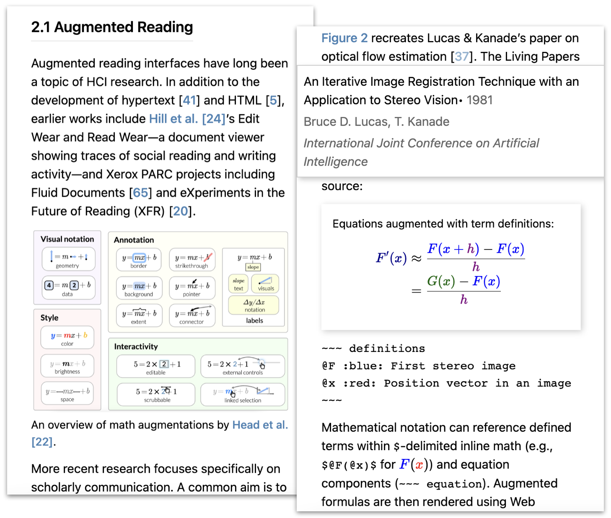

Living Papers: A Language Toolkit for Augmented Scholarly Communication
Abstract
Computing technology has deeply shaped how academic articles are written and produced, yet article formats and affordances have changed little over centuries. The status quo consists of digital files optimized for printed paper—ill-suited to interactive reading aids, accessibility, dynamic figures, or easy information extraction and reuse. Guided by formative discussions with scholarly communication researchers and publishing tool developers, we present Living Papers, a language toolkit for producing augmented academic articles that span print, interactive, and computational media. Living Papers articles may include formatted text, references, executable code, and interactive components. Articles are parsed into a standardized document format from which a variety of outputs are generated, including static PDFs, dynamic web pages, and extraction APIs for paper content and metadata. We describe Living Papers’ architecture, document model, and reactive runtime, and detail key aspects such as citation processing and conversion of interactive components to static content. We demonstrate the use and extension of Living Papers through examples spanning traditional research papers, explorable explanations, information extraction, and reading aids such as enhanced citations, cross-references, and equations. Living Papers is available as an extensible, open source platform intended to support both article authors and researchers of augmented reading and writing experiences.
Introduction
For centuries, the format of academic articles has adhered to conventions compatible with the movable type printing press: a user interface
consisting of textual, mathematical, and graphical content organized into sections, figures, and linkages such as footnotes, bibliographic citations, and cross-references.
In recent decades, computational technologies such as word processing, digital typesetting, and the Internet have had a tremendous impact on how research articles are written, produced, archived, and accessed, yet had relatively little impact on the structure of articles themselves.
Physical paper has multiple virtues as a format—it is tangible and archival, with no batteries required.
But academic articles are now often read on a screen [
In contrast, visions of alternative publishing formats have been a staple of Human-Computer Interaction since the inception of the field, from initial hypertext designs [
Meanwhile, both corporations [
We seek to bridge present and future publishing through novel authoring tools.
We contribute Living Papers, a framework for writing enhanced articles that encompass multiple output types:
interactive web pages to enable augmented reading experiences, accessibility, and self-publishing;
static PDFs to align incentives and participate in existing publishing workflows;
and application programming interfaces (APIs) to enable easy extraction and reuse of both article content and executable code.
In sum, Living Papers is a language toolkit
consisting of a standardized document model and a set of extensible parsers, transforms, and output generators.
To support dynamic reading aids and explorable explanations [backwards compatibility
with current publishing practices, the Living Papers compiler automatically converts interactive and web-based material to static content, and generates LaTeX [
We present our design objectives for Living Papers, honed in conversations with publishing tool developers and researchers of both augmented reading aids and information extraction from academic articles.
We seek to balance tensions among dynamic content, accessible authoring, participation in existing publishing workflows, and research into novel techniques.
We evaluate the system by demonstration, sharing articles by ourselves and others that span formal research papers (including this one!), explorable explanations, and enhanced content extraction and reuse.
These examples highlight augmentations such as enhanced previews for citations and cross-referenced material, equations with interactive term definitions, and articles with dynamic content such as explorable multiverse analyses [
Related Work
Living Papers connects prior research on augmented reading, article authoring tools, and information extraction from academic papers.
Augmented Reading
Augmented reading interfaces have long been a topic of HCI research.
In addition to the development of hypertext [
More recent research focuses specifically on scholarly communication.
A common aim is to provide contextual information about references, technical terms, and mathematical symbols where they are used, without having to break one’s flow by jumping to another part of the document.
ScholarPhi [multiverse
analyses of varied data analysis choices by interacting with the paper itself.
Living Papers provides a platform for the development and deployment of such techniques.
Elsewhere, interactive articles with dynamic figures, annotations, and embedded simulations have gained prominence, particularly in data-driven journalism [
Authoring Tools
Academic articles are typically written using word processors or digital typesetting tools, notably TeX [
Pandoc [
Authoring tools may include executable code to enable interactivity or to support computational generation of content such as figures, tables, and statistical models.
Knuth’s Literate Programming [cells
that may contain text (with Markdown syntax) or runnable code.
CurveNote [
RMarkdown [live
JavaScript in the browser.
Living Papers similarly supports interleaved text and code, and can execute code either at compile time or within an integrated reactive runtime and component system.
Both Living Papers and Quarto independently chose to incorporate the JavaScript dialect of Observable notebooks [
Manubot [
Idyll [
Living Papers and the projects above share significant overlaps.
Markdown syntax is prevalent across projects and multiple tools use identifiers such as DOIs to automatically resolve bibliographic data.
Living Papers differs from the other projects by combining both support for academic papers (including built-in
reading augmentations) and an integrated reactive runtime and component system.
To the best of our knowledge, Living Papers is also unique in generating APIs for context extraction and reuse.
Meanwhile, other tools for interactive documents use graphical interfaces rather than textual markup and code.
Idyll Studio [
Information Extraction & Reuse
Other projects focus on analyzing and extracting content from papers, sometimes available only in PDF form.
Augmented reading techniques (unlock
content to convert PDF documents to more screen reader accessible HTML [
Living Papers instead supports extraction and reuse directly from published results. In addition to articles intended for people to read, Living Papers produces outputs for computational use. Living Papers generates a structured AST format in JavaScript Object Notation (JSON) and an application programming interface (API) that provides convenient access to paper metadata (title, authors, etc.) and content (section text, figures, captions, references, in situ citations). Moreover, the interactive content of a Living Papers article compiles to a separate, importable JavaScript module, enabling reuse of computational content in other articles or web pages.
Design Goals & Process
Living Papers seeks to balance sometimes competing goals, such as supporting both interactive web articles and standard print workflows.
Through our iterative development we have discussed our goals and progress with multiple stakeholder groups.
Over the period of a year we spoke with augmented reading and accessibility researchers from the CHI, UIST, VIS, and ASSETS communities; information extraction and knowledge base researchers (many associated with the Semantic Scholar team [
Augmented reading experiences.
We seek to aid contextual understanding of references, formulas, and other content without bouncing
between paper sections (
Computational media. We seek to recast scholarly publications from static articles to computational artifacts more amenable to both people and machines. Authors should be able to incorporate reproducible results such as models and data visualizations, which can then be reused as-is in other media. Living Papers supports interaction via a reactive runtime that integrates executable code blocks and an extensible component library that includes augmented citations, cross-references, equations, and interactive text. While tools like Semantic Scholar rely on accurate information extraction to provide reading aids, Living Papers side-steps this issue via language design and enables downstream extraction by producing APIs to query paper content and reuse reactive web content.
Approachable writing and content generation.
We sought a familiar yet sufficiently expressive markup language, leading us to use Markdown as our default input format.
We follow Pandoc’s [
Compatible with existing publishing norms. We hypothesize that the print-focused needs of current publication workflows is a major impediment to the adoption of augmented formats. Distill.pub editors, for instance, emphasized the issue of aligning to existing incentives. Living Papers supports both interactive web-based content and traditional print-based media. Authors should be able to write their content once and generate both augmented web pages and submission-worthy PDFs. To accommodate these needs, Living Papers automatically converts interactive material to static text or images for print output, while also supporting output-specific blocks when authors wish to specialize content for different media.
Accessible and archivable content and interactions. Accessibility researchers expressed a strong preference for HTML over PDF, as HTML output with semantic tags better supports screen readers than standard PDF output. Living Papers’ default web page template uses a responsive layout that adjusts for desktop or mobile viewing. By publishing to the Web, Living Papers is also applicable to more informal genres such as blog posts. Meanwhile, static output enables printing to paper for both reading and archival purposes.
Collaborative authoring and review.
Much academic work is collaborative in nature.
Living Papers uses plain text formats that operate well with revision control and diff’ing tools such as Git, supporting awareness and integration of collaborators’ work.
We also support anchored annotations [
Extensible platform for research. While Living Papers is intended to be useful as-is, our collective understanding of the design space of augmented reading aids and effective use of interactivity is still developing. For example, augmented reading researchers desired an extensible research platform for better dissemination and testing of techniques. To support continued research and evaluation, Living Papers provides an open architecture with flexible parsing, transforms, and output formats. Living Papers can support exploration of new input markup languages, AST transforms, reading aids, custom interactive components, output types, and more.
In terms of non-goals, web application frameworks, static site generators, and narrative visualization tools (e.g., for rich scrollytelling
[evolution, not revolution.
This focus was honed by discussions with notebook and publishing tool creators, and by the accretive history of the Web versus other document systems, all the way back to Nelson and the curse of Xanadu
[polyglot
syntax.
Example Articles
Before detailing Living Papers’ technical building blocks, we present a set of example articles that span—and blur the distinction between—traditional research papers and explorable explanations. All article sources and outputs are included as supplemental material. Beyond the examples presented here, both ourselves and others have used Living Papers to write research papers for course projects and for venues such as IEEE VIS, ACM CHI, and UIST—including this paper.
Fast & Accurate Kernel Density Estimation
figure component:
::: figure {#id .class property=value}

| Caption text
:::References in BibTeX format can be included in-document, in a separate file, or retrieved using an inline identifier (e.g., using DOIs, @doi:10.1109/VIS49827.2021.9623323).
Living Papers’ more accessible html output includes augmented reading aids that provide previews for citations and cross-references (
Living Papers also helps manage figure layout across media types.
The Web-based version includes margin figures (indicated by a .margin class on figure components), which, for the latex output, are instead placed within a two-column layout.
LaTeX is notoriously finicky with figure layout: to ensure desired placement, authors may need to move figure source definitions far from the content they reference.
Living Papers provides a \place{id} directive that indicates where to place a referenced figure or table within the output latex source.
This allows html output to place the figure where it is defined in the original Living Papers source, while repositioning the figure as desired within generated LaTeX.
To adjust layout and prevent undesirable gaps or overflows, the latex output module also accepts a vspace option that systematically inserts vertical offset instructions for figures, captions, or other named node types.
We have found these extensions valuable for expediting article production, including for this current paper.
An Iterative Image Registration Technique
stickymargin figure (right) stays fixed while scrolling the current section, maintaining context.
definitions components in the document source:
~~~ definitions
@F :blue: First stereo image
@x :red: Position vector in an image
~~~Mathematical notation can reference defined terms within $-delimited inline math (e.g., $@F(@x)$ for ~~~ equation).
Augmented formulas are then rendered using Web components that inject color annotations into KaTeX [latex output shows normal, unaugmented math.
The article includes augmented sticky
figures that persist to maintain context while reading.
For html output, adding the attribute sticky-until="#sec4_2" to a figure component causes that figure to stay on-screen until the section with id sec4_2 is reached.
The latex output ignores these web-specific annotations.
Explorable Multiverse Analysis
Living Papers articles can include interactive computational content.
Here we recreate
[:option-text:]{
options=[50,68,80,90,95,99,99.9]
suffix="%"
bind=confidenceLevel
}The reactive runtime binds the component value to the runtime’s confidenceLevel variable, causing all dependent components to update.
The inline JavaScript code `js confidenceLevel`, for example, dynamically displays the current value as output text.
Other bound components similarly update via two-way bindings.
The article uses pre-computed images for all confidence level and analysis procedure combinations (e.g., bootstrapped vs. parametric intervals).
The image syntax  binds code output—here, the variable figA—to the image source URL.
Alternatively, result images could be generated during article compilation by using the knitr transform to evaluate R code blocks (
This article also compiles to compatible LaTeX.
An output-specific AST transform (
The Barnes-Hut Approximation
[Θ = 0.5](`theta=0.5`)) and bound sliders (created with the Observable standard library’s Inputs.range method):
~~~ js {bind=theta}
Inputs.range([0, 2], { step: 0.1, label: 'Theta' })
~~~Similar to the Idyll version, the force simulation and Vega-based plots are implemented as custom components.
Converting the original React components to W3C custom HTML elements was straightforward, involving changes only to wrapper
code.
However, the Idyll version also involves custom components for sliders and action links (implemented in separate JavaScript files) and integration logic that requires knowledge of Idyll internals.
Living Papers supports these features, including reuse of common Observable components, directly within the primary article source.
The article compiles to LaTeX, but, if done naïvely, can produce an illegible article due to the lack of interaction.
Using output-specific blocks, Living Papers authors can designate content that should be included only for target output types.
Here, we can annotate the persistent interactive simulation as html:only.
We can then use latex:only blocks to include compatible simulation snapshots with desired keyframe parameters in the static output.

html output.Zoomable Paper Reader
html output into a zoomable, column-oriented layout.
The initial view provides an overview of the full paper.
A reader can freely pan and zoom the canvas.
For a linear reading experience, the reader can click a region of the article (Fig. track
to the top of the next column.
The content in each column is standard Living Papers output, with the same reading aids and reactive content options previously discussed.
We are now refactoring this layout and navigation code into a reusable html output template.
Living Papers Architecture

web, latex, and api output apply output-specific AST transforms and then generate output files.Living Papers uses the compilation pipeline illustrated in Figures lpub) for article compilation.
Here we describe the core abstractions of the document model, reactive runtime, and extensibility mechanisms.
Later sections further detail the compilation steps of parsing (
Document Model
Living Papers uses an AST format adapted from Idyll [
The document tree is rooted at the AST article property.
A document node may contain a type, name, properties, and either a value or children.
Currently, we only use the types textnode and component.
A text node contains verbatim text as a string value.
Component nodes include a name (e.g., p for paragraph or em for emphasis) and may include children as an array of child AST nodes.
article.
Node properties consist of key-value pairs where the values take one of three types.
Value-typed properties simply contain a static value.
Expression-typed properties contain a reactive JavaScript expression, which can be used to dynamically set component properties.
Event-typed properties contain JavaScript event handler code.
Unlike expression properties, event handlers can update variable assignments in the reactive runtime (class property may contain one or more named classes used to style content.
Living Papers includes a standard set of classes for layout and sizing shared by html and latex output.
Our design prioritizes Web output, while maintaining flexibility for other outputs.
Basic AST component nodes adhere to matching HTML elements.
Living Papers’ p, link, and image nodes map to p, a, and img HTML tags, with properties that align to corresponding HTML attributes.
Similarly, formatting (em, strong, blockquote, …) and list (ul, ol, li) nodes mirror their HTML equivalents.
Other nodes are specific to Living Papers.
The cite-list and cite-ref nodes represent citations.
A cross-ref node represents a reference to a section, figure, table, or equation elsewhere in the article.
The code and codeblock components represent source code, often with syntax highlighting.
Meanwhile, math and equation nodes represent expressions in TeX math notation.
Component nodes for executable code, math formulas, or other specialized syntax may include content in a code property or child text node.
For example, a math node with the formula for the golden ratio \phi=\frac{1+\sqrt{5}}{2}.
Downstream transforms or output modules then process this content as needed.
With html output, each of these is ultimately displayed using a custom HTML element.
Reactive Runtime
To support interaction, Living Papers includes a reactive runtime in which changes to variables or code outputs automatically propagate to dependent elements. Though the runtime is browser-based, it is tied to features of Living Papers’ core document model, including expression- and event-typed properties.
Unlike Idyll, which uses its own basic reactive variable store within a React [
After initial parsing, an AST transform identifies executable code blocks using Observable’s JavaScript dialect and converts them to cell-view component nodes.
Multiple named cells (reactive units) can be defined within one code block by using a single-line --- delimiter. Only the last cell in a block is mapped to visible output.
Other components can also participate.
Expression-valued properties map to reactive variables in the runtime, updating their corresponding components upon change.
Event-valued properties are evaluated upon component input events (such as click), and can assign new values to named reactive variables, triggering article updates.
Both custom components and JavaScript-defined elements (e.g., Observable Inputs [bind property that instructs the runtime to instantiate a two-way binding between a named reactive variable and the input component value.
Depending on the input format, Living Papers provides syntactic sugar for runtime integration.
In Living Papers Markdown, the span $$x^2 = ${v}^2 = ${v*v}$$ specifies a dynamic equation: JavaScript string interpolation is performed for the templated code ${v} and ${v*v}, the resulting TeX formula is then typeset.
We use a double $$ delimiter here to enable these internal template variables.
Instead of a normal hyperlink, the link syntax [click me](`v+=1`) specifies an action link
with an event-typed onclick property invoked upon click.
Similarly, the image syntax  creates an expression-valued src property that dynamically sets the source URL to the image_src variable.
Extensibility
The Living Papers compiler marshals a number of extensible modules.
Articles may specify AST transforms to apply.
Web output may include components implemented as custom HTML elements.
Both html and latex output are generated using templates.
The compiler maintains a context object across parsing, transforms, and output generation to provide access to needed resources and services. The context provides access to the source file paths, directories, and external options (to complement or override options provided as article metadata) as well as caching, logging, and a resolution method for extension lookup.
Living Papers supports third-party extensions using a resolution scheme to lookup external transforms, components, templates, parsers, or output modules.
If an extension is specified as a file path, it is looked up directly, typically within the same article project.
Otherwise, the extension specification is treated as an npm (Node Package Manager) package name and looked up using Node.js’ built-in resolution algorithm.
Third-party packages can include a special living-papers entry in their package.json file, providing a manifest for any extensions (transforms, components, etc.) provided; these are then added to the compiler’s internal registry.
Input Parsing
::: figure {#overview .page position="t"}

| Figure caption text.
:::
~~~ equation {#kde}
f(x) = \frac{1}{n\sigma} \sum_{i=1}^{n}
K{\Big (}\frac{x - x_i}{\sigma}{\Big )}
~~~
[:range-text:]{min=1 max=10 bind=var}:::) contain Markdown content to be parsed. Verbatim blocks (~~~) pass child content as-is. Inline elements may include parsed child content in the span after the :component-name:.Parsing is the first phase of article compilation.
The Living Papers architecture supports arbitrary parsers dispatched by file extension or a specified input type, including the non-parser
of reading in an existing canonical AST JSON file.
That said, our current implementation focuses on an extended Markdown format.
Given its familiarity and support for citations, references, tables, and more, we use Pandoc’s Markdown variant.
The parser module calls the Pandoc binary to parse inputs and produce a Pandoc AST in JSON format, then transforms the Pandoc AST to a Living Papers AST.
Prior to invoking Pandoc, a pre-processor is used to handle our customized component syntax, including block and inline components (
The parser performs additional interpretation tasks when mapping the Pandoc AST to a Living Papers AST.
Notably, it classifies different references by type.
While @Knuth:84 cites a reference by id (e.g., in BibTeX), @doi:10.1093/comjnl/27.2.97 instead cites the work by its DOI.
Meanwhile, references such as @fig:overview or @eqn:kde are cross-references to article content.
The parser distinguishes among these based on the prefix.
Though the Markdown parser is not internally extensible at present, Living Papers can also accept entirely new parsers.
In any case, novel components are supported via AST transforms.
For example, a transform can extract and process code blocks with custom component names (e.g., the math term definitions in
AST Transforms
After an initial parse, the compiler applies AST transforms to map the parser output to a canonical AST representation of the article.
Different output modules may also apply subsequent AST transforms.
An AST transform is created by calling a constructor method that passes in options, resulting in a function that takes an AST and context (
Post-Parse Transforms
The first transform applied after parsing handles inclusion of additional content. Depending on the specified options, additional source files are loaded, either parsed or left verbatim, and then added to the AST. As in many other document processors, this allows article content to be spread over multiple files.
The next transform performs runtime code extraction, identifying executable code (e.g., `js value.toFixed(2)`) and mapping it to cell-view components for inclusion in the reactive runtime.
Subsequent parsing and generation of runtime code occurs later during html output generation (
The citations transform provides citation processing.
Any external bibliography (BibTeX) files referenced in the article metadata are first loaded and parsed.
Next, the transform finds bibliography component nodes in the AST and parses their verbatim content.
Bibliographic data is parsed using the citation.js library [cite-ref nodes.
If a citation refers to a work by an internal id, the transform attempts to look up that id among the parsed entries.
If the citation instead uses an external id such as a DOI, the transform attempts to retrieve a CSL-JSON entry from the Web.
For DOI lookup we use the REST API of doi.org.
Given a resolved external id, the transform also queries the Semantic Scholar API [tldr
) snippets.
Network request results are cached across iterative compilations for improved performance.
The citations transform produces multiple results.
Bibliographic entries for all cited works are included in a formatted bibliography at the end of the article.
All cite-ref nodes are updated to include an integer index into the sorted bibliography and a resolved id.data property under the citations key.
Citation lookup failures are also recognized, resulting in informative error messages.
Opt-In Transforms
Opt-in AST transforms specified in an article’s metadata run after the standard transforms. Either custom third-party transforms or the following built-in transforms may be invoked.
The knitr transform extracts executable code written in the R programming language, synthesizes and evaluates an R script, and weaves the results back into the Living Papers AST.
The transform writes extracted R code to blocks in an external Markdown file, invokes the knitr program (also used by RMarkdown and Quarto) to evaluate the code, and parses the resulting output Markdown to extract generated content.
Adding a bind property to an R code block causes JSON-serialized output to be bound to a named variable in the reactive runtime.
As in
The pyodide transform extracts Python code to run directly within the reactive runtime.
We use Pyodide, a WebAssembly port of Python and libraries including Pandas, Matplotlib, and Scikit-Learn.
Pyodide evaluates Python code in the browser, including an object model with direct JavaScript bindings.
The transform leverages Pyodide to create Python cells that run just like standard Observable JavaScript cells.
Output-Specific Transforms
Ouput modules apply transforms to prepare an AST for a specific output type.
For example, html output applies multiple transforms to aid layout, section numbering, and other aspects (
The convert transform first analyzes an input AST to form a conversion plan, consisting of nodes and properties that need to be converted to produce static output.
For example, SVG images are supported in the browser but not by LaTeX; we want to convert those to PDF format prior to latex output generation.
Other content is generated or parameterized by the reactive runtime (e.g., expression-typed properties).
We must instantiate a runtime, evaluate the content, then extract and convert it.
To perform conversion we use Puppeteer [html output module to the resulting web page, enabling dynamic lookup via CSS selectors.
The transform then loads the compiled article in Puppeteer, extracts the rendered content, and rewrites the corresponding AST nodes.
For expression-typed AST node properties and text content, generated values are simply transferred as-is.
For all other content, the transform takes an image screenshot in either PNG, JPG, or PDF format.
Puppeteer provides a convenient API for extracting bitmap images of an identified DOM element.
However, for PDF output, only full page printing is supported.
To work around this limitation, the transform dynamically injects a new stylesheet into the Puppeteer page that hides all content but the desired target element.
It also applies absolute positioning to override any local layout directives.
The transform then retrieves the element’s bounding box and prints
a PDF page whose dimensions exactly match that of the target element.
The result is a vector graphics PDF that can be directly included in latex output.
Output Generation
Given a canonical AST, Living Papers invokes output generation modules to produce both human- and machine-readable articles.
Web Output

To generate interactive web pages, the html output module first applies a sequence of output-specific AST transforms.
These transforms prepare syntax-highlighted code listings;
handle sections designated by the abstract, acknowledgements, and appendix component nodes;
generate a header section with article title and authors;
insert section and figure numbers;
resolve cross-references;
and process nodes with a sticky-until attribute, which causes content to persist on screen until an indicated section is reached.
Given a web-specific AST, the module first compiles code for the reactive runtime.
Code from all cell-view nodes and expression- and event-typed properties is compiled to standard JavaScript functions for inclusion in the Living Papers runtime.
While cell-view components and expression properties map to standard reactive variables, event handlers must be dealt with separately.
As the Observable runtime does not allow a cell to be redefined internally, event handlers must modify the runtime by re-defining variables externally.
The code generator inserts a proxy object to collect all variable assignments made by a handler; these assignments are then applied to the runtime in batch when the handler completes.
Next, the module marshals all components that map to custom HTML elements.
Living Papers includes components for citations (cite-ref), cross-references (cross-ref), reactive runtime output (cell-view), syntax-highlighted code (code-block), and math blocks (math, equation).
KaTeX [range-text to select from a range of values by dragging and toggle-text to cycle through values upon click or touch.
These input components can be bound to reactive variables (
The html output module then generates entry code to register any custom components used, instantiate the runtime, load generated runtime code, and assign the top-level AST data property to the root article element for subsequent lookup.
All generated code and component definitions are run through a bundler that packages and optionally minifies the code for use.
If an article does not contain interactive content or custom components, this process is skipped and no output JavaScript is generated.
Finally, the module generates output HTML and CSS by walking the AST and mapping nodes to corresponding HTML elements or text nodes.
Output-specific nodes or properties (e.g., those flagged for latex output) are ignored.
To generate CSS, both base CSS definitions shared by all articles and the CSS for a named theme are loaded.
Alternative themes can be used via Living Papers’ extension mechanisms.
The default layout uses multiple columns with a main column for primary content and a right margin column for footnotes and marginalia (tagged with the .margin class).
Media queries collapse all content to a single-column layout for accessible mobile reading.
An article’s metadata may include a styles property, indicating a custom CSS file to also include.
The collected CSS files are then bundled and optionally minified.
Depending on the article metadata settings, the resulting HTML, CSS, and JavaScript are either written as separate files to an output directory, or as a selfContained HTML file that includes CSS and JavaScript inline.
Living Papers also provides a static output module, which generates HTML without any interactive elements.
Interactive content is first converted to static assets by an output-specific transform (
Print Output
Print output is generated by the latex output module.
The module can produce a full LaTeX project, consisting of a directory with generated source files and assets.
By default, the module generates a LaTeX project in a temporary directory and invokes the external pdflatex command to produce a PDF.
The convert transform first maps interactive or Web content to LaTeX-compatible assets, as described in raw
TeX content are written verbatim.
The module segments generated content into named variables (e.g., preamble, abstract, body, acknowledgements, appendix) and passes these to a selected template.
Living Papers provides an extensible set of LaTeX templates for various publishing venues, including built-in templates for ACM and IEEE journals and conferences.
Living Papers includes additional directives to aid TeX-specific layout concerns, described earlier in
Computational Output
Living Papers also supports outputs intended for computational consumption.
The ast output module simply writes the canonical AST in JSON format.
The AST can then be loaded and analyzed to extract article content, data, and metadata.
The api output module generates an API for more convenient access.
The generated API includes methods for accessing metadata (title, authors, etc.), querying article content (abstract, section text, captions, citations), and exporting figure content (including generated images).
The generated API can be easily imported as a standard ECMAScript module, including directly from a URL.
The api output module first runs an output-specific transform to generate static PNG images for all figures, tables, and equations.
Next it annotates the AST with these images in the form of base64-encoded data URLs.
It then generates a JavaScript module that loads the AST and provides methods to query and access the content.
We envision these modules being used for information extraction (e.g., for construction of academic knowledge bases) and to enable new applications (e.g., content for research lab websites, course syllabi, or curated libraries).
Like computational notebooks, Living Papers articles can contain executable code (e.g., models and dynamic figures) that people may wish to reuse in other articles or web pages.
The runtime output module generates a standalone JavaScript module that contains the compiled runtime code of an article and is compatible with Observable notebooks.
With this functionality, a Living Papers article can directly import (or transclude [
Discussion & Future Work
We presented Living Papers, a framework to bridge academic publishing of printed papers, interactive web pages, and machine-readable APIs and assets. Living Papers provides an extensible infrastructure for parsing, transformation, and generation of scholarly articles, coupled with a reactive runtime and component system supporting augmented reading aids and interactive texts. To the best of our knowledge, Living Papers is unique in its combination of reading augmentations, language-level interaction support, asset conversion, and output API generation for academic articles.
While we have not conducted a formal summative evaluation of Living Papers, our development process has been informed through consultation and collaboration with multiple stakeholders, spanning academic researchers and publishing tool developers.
Over the past six months we have used Living Papers to write five submitted research articles in our own lab, and have observed student use in a graduate scholarly communication course.
While we don’t expect all users to react as positively, one external paper collaborator told us unprompted that Living Papers is a bliss.
We have particularly appreciated the directness of Markdown syntax, the ease of generating Web output with reading aids baked in,
and the ability to directly incorporate code to generate content such as models, figures, and tables.
As showcased by our examples (
While rich interactivity can be attention-grabbing, finding an appropriate balance—in terms of both author effort and reader benefits—remains an open research question.
Beyond citations, cross-references, and term definitions, what should be in the standard library
of reading augmentations that authors can apply with little-to-no effort?
And under what conditions do richer, explorable explanations significantly improve reader comprehension?
We hope Living Papers will be used by ourselves and others to further develop and study the space of reading augmentations.
With respect to accessibility, we see Living Papers as a promising work in progress.
The current offering includes HTML output with semantic tags, alt-text images, responsive design to common viewing form factors, and the ability to convert computational output to static content (including static HTML, not just PDF).
The latter may be helpful for people with motion sensitivity.
Generated paper APIs could enable additional accessibility aids.
That said, our design goals (standard library
components, and subsequent studies as vital future work.
Another area for future work is graphical and collaborative environments for article writing and reviewing.
WYSIWYG editors (c.f., [
Meanwhile, we seek to leverage the computational output of Living Papers. We envision laboratory web sites, curated reading lists, or novel literature search tools populated with content extracted from Living Papers APIs. However, this vision rests on either the network effects of wide-spread adoption or the ability to more effectively parse existing content to a shared machine-readable representation. We believe Living Papers can contribute to conversations about what such a shared document model can and should include, particularly with respect to interactive content.
One avenue may be to convert existing documents to the Living Papers format.
Though parsing PDFs is difficult, existing tools that target HTML output (such as SciA11y [
One potential concern is the large syntactic surface
of Living Papers.
To make full use of the system, paper authors must learn Living Papers Markdown, Observable JavaScript (for interactive content), BibTeX (for references), bits of TeX/LaTeX (for math equations, or when custom output-specific directives are needed), and so on.
Developers of new transforms and components require further knowledge, such as standard JavaScript, HTML, and CSS.
These complications are a direct consequence of Living Papers’ evolutionary approach and its embrace of the Web and literate programming
design patterns.
While arguably complex, both interleaved
syntax and these constituent languages are already in widespread use.
We hope to build on this familiarity and infrastructure, while making many aspects opt-in
rather than required.
Still, adoption is difficult and hard to predict. Even if Living Papers falls short of a widely-used framework, it can be deployed for real-world publications and websites, and also help influence the trajectory and feature set of other tools. For individual users, Living Papers provides natural escape hatches: one can produce a LaTeX project or interactive web page and, if desired, jettison Living Papers and move forward with the generated outputs.
More broadly, Living Papers can serve as a non-proprietary and extensible research system for experimentation—but one that also connects with existing publishing workflows, hopefully better aligning with author incentives. It offers a path for developers of novel reading or authoring techniques to integrate into an existing system for wider deployment in the wild. Living Papers is available as open source software at github.com/uwdata/living-papers.
References
- Allen Institute for Artificial Intelligence, Semantic Scholar Team. (2023). Semantic Reader. https://www.semanticscholar.org/product/semantic-reader
- Ammar, W., Groeneveld, D., Bhagavatula, C., Beltagy, I., Crawford, M., Downey, D., Dunkelberger, J., Elgohary, A., Feldman, S., Ha, V., Kinney, R., Kohlmeier, S., Lo, K., Murray, T., Ooi, H.-H., Peters, M., Power, J., Skjonsberg, S., Wang, L., … oren. (2018). Construction of the Literature Graph in Semantic Scholar. Proceedings of the 2018 Conference of the North American Chapter of the Association for Computational Linguistics: Human Language Technologies, Volume 3 (Industry Papers). Proceedings of the 2018 Conference of the North American Chapter of the Association for Computational Linguistics: Human Language Technologies, Volume 3 (Industry Papers). https://doi.org/10.18653/v1/n18-3011
- August, T., Wang, L. L., Bragg, J., Hearst, M. A., Head, A., & Lo, K. (2022). Paper Plain: Making Medical Research Papers Approachable to Healthcare Consumers with Natural Language Processing (Version 1). arXiv. https://doi.org/10.48550/ARXIV.2203.00130
- Badam, S. K., Liu, Z., & Elmqvist, N. (2019). Elastic Documents: Coupling Text and Tables through Contextual Visualizations for Enhanced Document Reading. IEEE Transactions on Visualization and Computer Graphics, 25(1), 661–671. https://doi.org/10.1109/tvcg.2018.2865119
- Berners-Lee, T., Cailliau, R., Luotonen, A., Nielsen, H. F., & Secret, A. (1994). The World-Wide Web. Communications of the ACM, 37(8), 76–82. https://doi.org/10.1145/179606.179671
- Bigham, J. P., Brady, E. L., Gleason, C., Guo, A., & Shamma, D. A. (2016, May 7). An Uninteresting Tour Through Why Our Research Papers Aren’t Accessible. Proceedings of the 2016 CHI Conference Extended Abstracts on Human Factors in Computing Systems. CHI’16: CHI Conference on Human Factors in Computing Systems. https://doi.org/10.1145/2851581.2892588
- Bostock, M., Ogievetsky, V., & Heer, J. (2011). D³ Data-Driven Documents. IEEE Transactions on Visualization and Computer Graphics, 17(12), 2301–2309. https://doi.org/10.1109/tvcg.2011.185
- Citation Style Language. (2023). https://citationstyles.org/
- Conlen, M., & Heer, J. (2018, October 11). Idyll. Proceedings of the 31st Annual ACM Symposium on User Interface Software and Technology. UIST ’18: The 31st Annual ACM Symposium on User Interface Software and Technology. https://doi.org/10.1145/3242587.3242600
- Conlen, M., Vo, M., Tan, A., & Heer, J. (2021, October 10). Idyll Studio: A Structured Editor for Authoring Interactive & Data-Driven Articles. The 34th Annual ACM Symposium on User Interface Software and Technology. UIST ’21: The 34th Annual ACM Symposium on User Interface Software and Technology. https://doi.org/10.1145/3472749.3474731
- Conlen, M., & Heer, J. (2022). Fidyll: A Compiler for Cross-Format Data Stories & Explorable Explanations (Version 1). arXiv. https://doi.org/10.48550/ARXIV.2205.09858
- Crichton, W. (2023). A New Medium for Communicating Research on Programming Languages. https://willcrichton.net/nota/
- Curvenote. (2023). https://curvenote.com/
- Dragicevic, P., Jansen, Y., Sarma, A., Kay, M., & Chevalier, F. (2019, May 2). Increasing the Transparency of Research Papers with Explorable Multiverse Analyses. Proceedings of the 2019 CHI Conference on Human Factors in Computing Systems. CHI ’19: CHI Conference on Human Factors in Computing Systems. https://doi.org/10.1145/3290605.3300295
- Eisenberg, E., & Alpert, S. (2023). KaTeX: The fastest math typesetting library for the web. https://katex.org
- Fok, R., Kambhamettu, H., Soldaini, L., Bragg, J., Lo, K., Head, A., Hearst, M. A., & Weld, D. S. (2022). Scim: Intelligent Skimming Support for Scientific Papers. arXiv. https://doi.org/10.48550/ARXIV.2205.04561
- Fortunato, S., Bergstrom, C. T., Börner, K., Evans, J. A., Helbing, D., Milojević, S., Petersen, A. M., Radicchi, F., Sinatra, R., Uzzi, B., Vespignani, A., Waltman, L., Wang, D., & Barabási, A.-L. (2018). Science of science. Science, 359(6379). https://doi.org/10.1126/science.aao0185
- Google Scholar. (2023). https://scholar.google.com/
- Google, Inc. (2023). Puppeteer. https://pptr.dev/
- Gruber, J. (2004). Markdown. https://daringfireball.net/projects/markdown/
- Harrison, S., Minneman, S., Back, M., Balsamo, A., Chow, M., Gold, R., Gorbet, M., & Mac Donald, D. (2001). Design: the what of XFR. Interactions, 8(3), 21–30. https://doi.org/10.1145/369825.369829
- Head, A., Lo, K., Kang, D., Fok, R., Skjonsberg, S., Weld, D. S., & Hearst, M. A. (2021, May 6). Augmenting Scientific Papers with Just-in-Time, Position-Sensitive Definitions of Terms and Symbols. Proceedings of the 2021 CHI Conference on Human Factors in Computing Systems. CHI ’21: CHI Conference on Human Factors in Computing Systems. https://doi.org/10.1145/3411764.3445648
- Head, A., Xie, A., & Hearst, M. A. (2022, April 29). Math Augmentation: How Authors Enhance the Readability of Formulas using Novel Visual Design Practices. CHI Conference on Human Factors in Computing Systems. CHI ’22: CHI Conference on Human Factors in Computing Systems. https://doi.org/10.1145/3491102.3501932
- Heer, J. (2021, October). Fast & Accurate Gaussian Kernel Density Estimation. 2021 IEEE Visualization Conference (VIS). 2021 IEEE Visualization Conference (VIS). https://doi.org/10.1109/vis49827.2021.9623323
- Hill, W. C., Hollan, J. D., Wroblewski, D., & McCandless, T. (1992). Edit wear and read wear. Proceedings of the SIGCHI Conference on Human Factors in Computing Systems - CHI ’92. the SIGCHI conference. https://doi.org/10.1145/142750.142751
- Himmelstein, D. S., Rubinetti, V., Slochower, D. R., Hu, D., Malladi, V. S., Greene, C. S., & Gitter, A. (2019). Open collaborative writing with Manubot. PLOS Computational Biology, 15(6), e1007128. https://doi.org/10.1371/journal.pcbi.1007128
- Hope, T., Downey, D., Etzioni, O., Weld, D. S., & Horvitz, E. (2022). A Computational Inflection for Scientific Discovery (Version 2). arXiv. https://doi.org/10.48550/ARXIV.2205.02007
- Jupyter Book. (2023). https://jupyterbook.org/
- Kang, D., Head, A., Sidhu, R., Lo, K., Weld, D. S., & Hearst, M. A. (2020). Document-Level Definition Detection in Scholarly Documents: Existing Models, Error Analyses, and Future Directions (Version 1). arXiv. https://doi.org/10.48550/ARXIV.2010.05129
- Kim, D. H., Hoque, E., Kim, J., & Agrawala, M. (2018, October 11). Facilitating Document Reading by Linking Text and Tables. Proceedings of the 31st Annual ACM Symposium on User Interface Software and Technology. UIST ’18: The 31st Annual ACM Symposium on User Interface Software and Technology. https://doi.org/10.1145/3242587.3242617
- Kinney, R., Anastasiades, C., Authur, R., Beltagy, I., Bragg, J., Buraczynski, A., Cachola, I., Candra, S., Chandrasekhar, Y., Cohan, A., Crawford, M., Downey, D., Dunkelberger, J., Etzioni, O., Evans, R., Feldman, S., Gorney, J., Graham, D., Hu, F., … Weld, D. S. (2023). The Semantic Scholar Open Data Platform (Version 1). arXiv. https://doi.org/10.48550/ARXIV.2301.10140
- Klokmose, C. N., Eagan, J. R., Baader, S., Mackay, W., & Beaudouin-Lafon, M. (2015, November 5). Webstrates. Proceedings of the 28th Annual ACM Symposium on User Interface Software & Technology. UIST ’15: The 28th Annual ACM Symposium on User Interface Software and Technology. https://doi.org/10.1145/2807442.2807446
- Kluyver, T., Ragan-Kelley, B., Pérez, F., Granger, B. E., Bussonnier, M., Frederic, J., Kelley, K., Hamrick, J. B., Grout, J., Corlay, S., & others. (2016). Jupyter Notebooks-a publishing format for reproducible computational workflows. (Vol. 2016).
- Knuth, D. E. (1979). TEX and METAFONT: New directions in typesetting. American Mathematical Society.
- Knuth, D. E. (1984). Literate Programming. The Computer Journal, 27(2), 97–111. https://doi.org/10.1093/comjnl/27.2.97
- Lamport, L. (1985). LaTeX: A Document Preparation System. Addison-Wesley Professional.
- Lopez, P. (2009). GROBID: Combining Automatic Bibliographic Data Recognition and Term Extraction for Scholarship Publications. In Research and Advanced Technology for Digital Libraries (pp. 473–474). Springer Berlin Heidelberg. https://doi.org/10.1007/978-3-642-04346-8_62
- Lucas, B. D., & Kanade, T. (1981). An Iterative Image Registration Technique with an Application to Stereo Vision. International Joint Conference on Artificial Intelligence.
- MacFarlane, J. (2023). Pandoc: A Universal Document Converter. https://pandoc.org/
- Meta Open Source. (2023). React. https://react.dev/
- MyST Markdown. (2023). https://myst-tools.org/
- Nelson, T. H. (1965). Complex information processing. Proceedings of the 1965 20th National Conference On -. the 1965 20th national conference. https://doi.org/10.1145/800197.806036
- Nelson, T. H. (1981). Literary Machines. Mindful Press.
- Observable Inputs. (2023). https://github.com/observablehq/inputs
- Observable Runtime. (2023). https://github.com/observablehq/runtime
- Observable. (2023). https://observablehq.com/
- Overleaf. (2023). Online LaTeX Editor. https://www.overleaf.com/
- Phelps, T. A., & Wilensky, R. (2000). Robust intra-document locations. Computer Networks, 33(1–6), 105–118. https://doi.org/10.1016/s1389-1286(00)00043-8
- Quarto. (2023). https://quarto.org/
- RMarkdown. (2023). https://rmarkdown.rstudio.com/
- Rachatasumrit, N., Bragg, J., Zhang, A. X., & Weld, D. S. (2022, March 22). CiteRead: Integrating Localized Citation Contexts into Scientific Paper Reading. 27th International Conference on Intelligent User Interfaces. IUI ’22: 27th International Conference on Intelligent User Interfaces. https://doi.org/10.1145/3490099.3511162
- Ritchie, S. (2022). The Big Idea: Should we get rid of the scientific paper? The Guardian, 11. https://www.theguardian.com/books/2022/apr/11/the-big-idea-should-we-get-rid-of-the-scientific-paper
- Rule, A., Tabard, A., & Hollan, J. D. (2018, April 19). Exploration and Explanation in Computational Notebooks. Proceedings of the 2018 CHI Conference on Human Factors in Computing Systems. CHI ’18: CHI Conference on Human Factors in Computing Systems. https://doi.org/10.1145/3173574.3173606
- Satyanarayan, A., Russell, R., Hoffswell, J., & Heer, J. (2016). Reactive Vega: A Streaming Dataflow Architecture for Declarative Interactive Visualization. IEEE Transactions on Visualization and Computer Graphics, 22(1), 659–668. https://doi.org/10.1109/tvcg.2015.2467091
- Satyanarayan, A., Moritz, D., Wongsuphasawat, K., & Heer, J. (2017). Vega-Lite: A Grammar of Interactive Graphics. IEEE Transactions on Visualization and Computer Graphics, 23(1), 341–350. https://doi.org/10.1109/tvcg.2016.2599030
- Savva, M., Kong, N., Chhajta, A., Fei-Fei, L., Agrawala, M., & Heer, J. (2011, October 16). ReVision. Proceedings of the 24th Annual ACM Symposium on User Interface Software and Technology. UIST ’11: The 24th Annual ACM Symposium on User Interface Software and Technology. https://doi.org/10.1145/2047196.2047247
- Shen, Z., Lo, K., Wang, L. L., Kuehl, B., Weld, D. S., & Downey, D. (2022). VILA: Improving Structured Content Extraction from Scientific PDFs Using Visual Layout Groups. Transactions of the Association for Computational Linguistics, 10, 376–392. https://doi.org/10.1162/tacl_a_00466
- Sultanum, N., Chevalier, F., Bylinskii, Z., & Liu, Z. (2021, May 6). Leveraging Text-Chart Links to Support Authoring of Data-Driven Articles with VizFlow. Proceedings of the 2021 CHI Conference on Human Factors in Computing Systems. CHI ’21: CHI Conference on Human Factors in Computing Systems. https://doi.org/10.1145/3411764.3445354
- Team, E. (2021). Distill Hiatus. Distill, 6(7). https://doi.org/10.23915/distill.00031
- The Alliance for Networking Visual Culture. (2023). Scalar. https://scalar.me/anvc/scalar/
- Typst. (2023). Typst: Compose papers faster. https://typst.app/
- Victor, B. (2011). Explorable Explanations. http://worrydream.com/ExplorableExplanations/
- Wang, L. L., Cachola, I., Bragg, J., Cheng, E. Y.-Y., Haupt, C., Latzke, M., Kuehl, B., van Zuylen, M. N., Wagner, L., & Weld, D. (2021, October 17). SciA11y: Converting Scientific Papers to Accessible HTML. The 23rd International ACM SIGACCESS Conference on Computers and Accessibility. ASSETS ’21: The 23rd International ACM SIGACCESS Conference on Computers and Accessibility. https://doi.org/10.1145/3441852.3476545
- Willighagen, L. (2023). Citation.js. https://citation.js.org/
- Wolf, G. (1995, June). The Curse of Xanadu. Wired. https://www.wired.com/1995/06/xanadu/
- Workshop on Visualization for AI Explainability. (2022). http://visxai.io/
- Zellweger, P. T., Regli, S. H., Mackinlay, J. D., & Chang, B.-W. (2000, April). The impact of fluid documents on reading and browsing. Proceedings of the SIGCHI Conference on Human Factors in Computing Systems. CHI00: Human Factors in Computing Systems. https://doi.org/10.1145/332040.332440
- Zong, J., Lee, C., Lundgard, A., Jang, J., Hajas, D., & Satyanarayan, A. (2022). Rich Screen Reader Experiences for Accessible Data Visualization. Computer Graphics Forum, 41(3), 15–27. https://doi.org/10.1111/cgf.14519